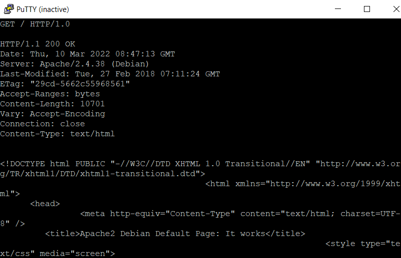
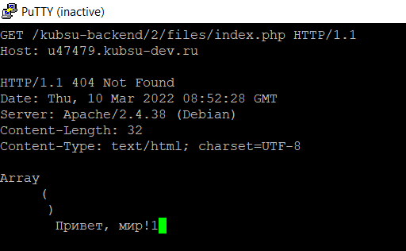
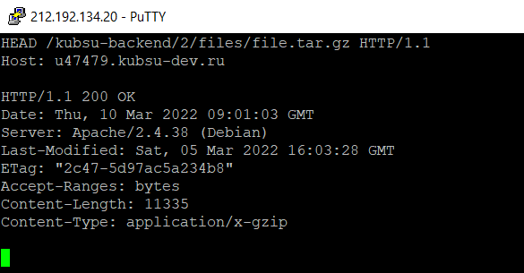
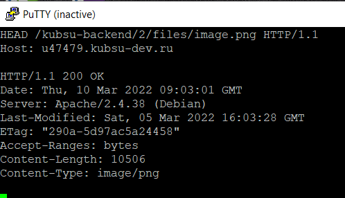
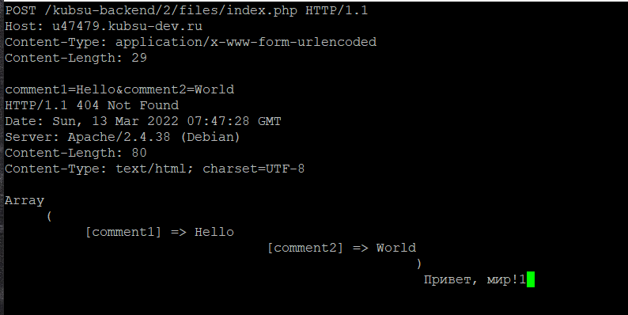
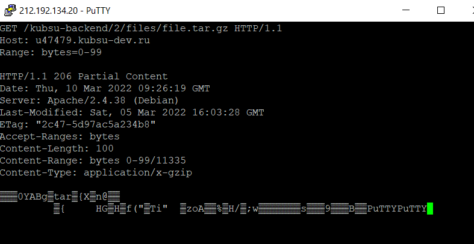
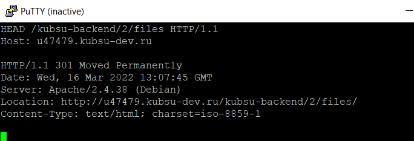

Как я загрузил файлы на сервер
Получим главную страницу методом GET (HTTP/1.0)
Получим внутреннюю страницу методом GET в протоколе HTTP 1.1
Определим размер файла file.tar.gz, не скачивая его при помощи метода HEAD. Результат - поле Content-Length
Определим медиатип ресурса /image.png при помощи метода HEAD В поле Content-Type содержится медиатип ресурса - image/png
Комментарий методом POST:
Первые 100 байт файла file.tar.gz:
Определим кодировку файла index.php (charset)
